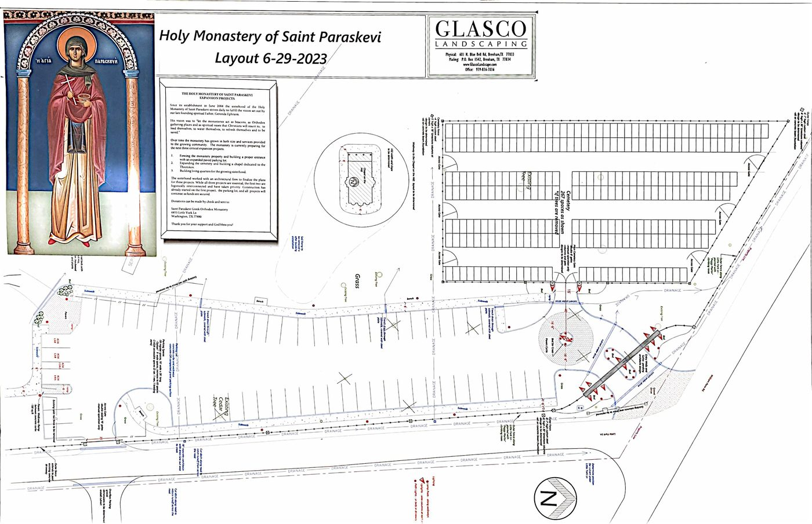

Saint Paraskevi Greek Orthodox Monastery

Our growing community
Since its establishment in June 2004, The Sisterhood of the Holy Monastery of Saint Paraskevi strives daily to fulfill the vision set by our late founding spiritual Father, Reverend Elder Ephraim (†2019) of Philotheou and Arizona.
Since 2004, the Sisterhood has grown both in number and the services provided. The community of the faithful that the monastery serves is continually growing as well. To accommodate this and future growth, the Sisterhood is currently focusing its efforts on three critical expansion projects:
- Fencing the monastery property and building a proper entrance with an expanded paved parking lot.
- Completing the expansion of the cemetery and building a Chapel dedicated to the Most Holy Theotokos at the southeast side.
- Completing the living quarters for the growing Sisterhood. This is a 3-story building adorned with a beautiful Chapel, on the 3rd floor, dedicated to Saint Spyridon the Wonderworker, Bishop of Trimythous.
The Sisterhood worked with an architectural firm to finalize the plans for these projects. Construction has started and will progress as funds are secured.
We thank you all for your prayers and support. We are particularly grateful to our faithful donors through whose benevolence and kindness the third project is now nearing completion.
May God bless you and your families!
Donations
Or donations can be made by check and sent to:
Saint Paraskevi Greek Orthodox Monastery
6855 Little York Ln.
Washington, TX 77880
